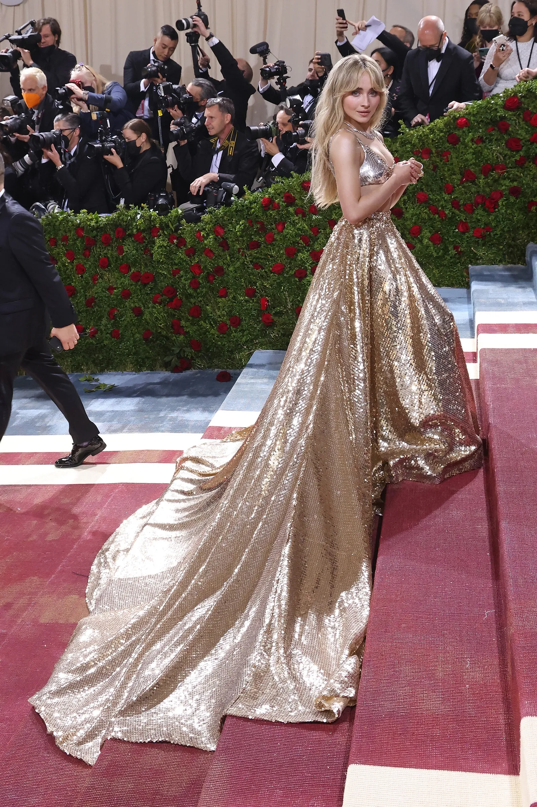

El diario del archivo
Historias que
se visten.
Ideas, referencias y detalles para mirar la Met Gala desde otra perspectiva.
Moda / Arte / Cultura
Detrás de un look,
siempre hay
una historia.
Del trabajo del atelier a los símbolos de una época. Explorá las piezas, las personas y las ideas que transforman la alfombra roja.
Encontrá tu próxima lectura
Lecturas seleccionadas
Diseño, historia y cultura
Para leer y descubrir
Todas las historias
Una selección de Architectural Digest. Cada artículo abre su nota completa en el sitio original, en una nueva pestaña.
La moda se mira.
Las historias se descubren.